Guia do utilizador
Como usar a GLPMGR
Uma visita simpática a tudo o que a GLPMGR faz, passo a passo. Ao seu ritmo. Nada aqui é aconselhamento médico, e a app funciona igualmente bem se usar só as partes de que precisa.
Primeiros passos
Não é preciso criar conta. Abra a GLPMGR e uma breve apresentação pergunta como toma o seu medicamento (injeções, comprimidos ou ambos) e mostra-lhe a app. Pode vê-la novamente a qualquer momento em Definições → Acerca de → Rever a apresentação.
Vale a pena começar por três coisas:
- Configurar o plano de doses, para que a GLPMGR saiba quando é a próxima dose (consulte O seu plano de doses).
- Permitir notificações quando lhe for pedido, se quiser receber lembretes. Pode alterar isto mais tarde nas Definições do iPhone.
- Registar o seu peso, se quiser ver a sua evolução. É totalmente opcional.
A app tem quatro separadores em baixo (ou em cima, no iPad): Hoje, Percurso, Sintomas e Definições.
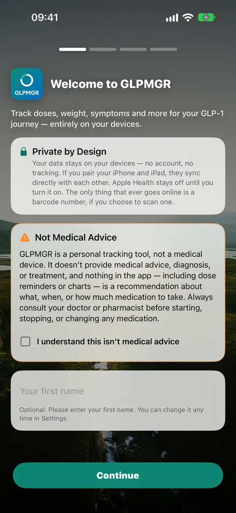
O ecrã Hoje
Hoje é a sua página de resumo. Cada mosaico mostra uma coisa, como a próxima dose, o seu objetivo, a água, a proteína ou o último local de injeção.
- Ver mais: toque na pequena seta de um mosaico para o abrir e toque novamente para o fechar.
- Alterar um mosaico: mantenha-o premido para ver opções para o tornar mais pequeno ou maior, movê-lo, ocultá-lo ou Ver tendências, uma página de gráficos.
- Organizar tudo: toque no botão de grelha no canto superior direito (Personalizar Hoje). Arraste os mosaicos para os reordenar, toque no olho para ocultar ou mostrar um, e use ··· para mudar o tamanho de um mosaico. Repor predefinição volta a pôr tudo como estava.
Quando está na hora de uma dose, o mosaico Próxima dose passa para o topo e fica lá até a registar.
Sequências (Definições → Incentivo → Sequências, desativadas até as ativar): dias seguidos em que regista alguma coisa: água, proteína ou um check-in. Nunca as doses: tome-as como o prescritor indica, não para manter uma sequência. Com Um dia de descanso por semana, um dia falhado por semana não termina uma sequência. Quando uma termina, nada é dito, começa uma nova e a sua melhor sequência fica guardada.
Incentivo (Definições → Incentivo, desativado até o ativar): marcos pelo que regista e pelo tempo que leva no seu percurso, uma nota em Hoje quando chega a um (para partilhar, se quiser), O seu jardim (um mosaico de Hoje com uma planta que cresce com os dias em que regista alguma coisa), palavras amáveis depois de uma dose e uma nota opcional ao domingo à noite. Nunca tem em conta o seu peso.
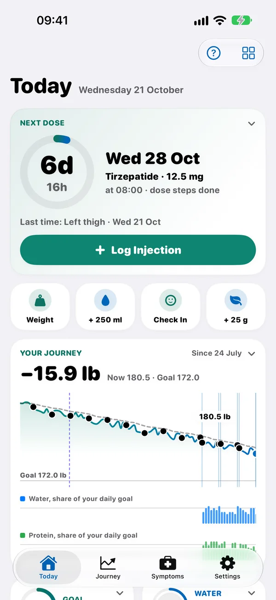
Registar uma dose
Toque em Registar injeção em Hoje ou Percurso, ou toque no mosaico Próxima dose quando está na hora de uma dose.
- Confirme o medicamento e a dose. Se tiver um plano, a dose é preenchida automaticamente, incluindo a etapa certa se estiver a aumentar a dose.
- Escolha o local de injeção entre as zonas que o fabricante do seu medicamento indica (consulte Locais de injeção).
- Altere a data e hora se estiver a registar mais tarde, acrescente notas, se quiser, e toque em Guardar.
Também pode registar o peso ao mesmo tempo com Registar o peso com esta injeção. Se toma um comprimido, o registo funciona da mesma forma, só que sem local de injeção.
Enganou-se? Abra o registo em Percurso → Cronologia para o alterar ou apagar.
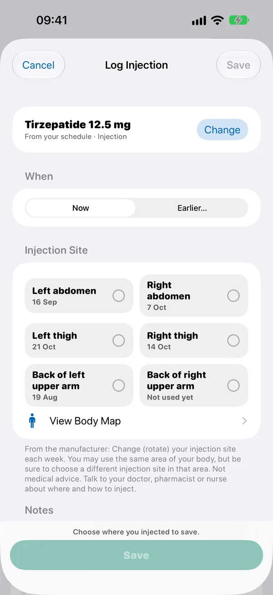
O seu plano de doses e as etapas da dose
Vá a Definições → Plano de doses e toque para adicionar ou editar um plano.
- Medicamento e dose: a dose que toma. Se usar etapas da dose, a dose atual é a da etapa em que está, e esta dose é usada quando as etapas terminarem.
- Frequência: com que frequência toma a dose (Repete-se, por exemplo Semanal), a data de Início e a Hora do lembrete.
- Etapas da dose: a maioria dos medicamentos GLP-1 começa com uma dose baixa que aumenta ao longo de algumas semanas (os médicos chamam a isto titulação), e algumas pessoas reduzem a dose mais tarde. Ative Usar etapas da dose, adicione a dose de cada etapa e escolha quantas doses toma nessa etapa. A GLPMGR avança para a etapa seguinte à medida que regista doses. Confirme sempre com o que lhe disse o médico, enfermeiro ou farmacêutico.
- Reserva: ative Contar canetas/frascos e indique quantas doses tem. Cada dose registada é descontada, e a GLPMGR avisa quando a reserva estiver a acabar. Toque em Repor agora quando tiver mais.
A GLPMGR nunca calcula nem recomenda uma dose. Limita-se a seguir o plano que introduz.
Configuração do percurso. A forma mais fácil de configurar o seu medicamento: Definições → Plano de doses → Configurar com ajuda, ou Configure o seu medicamento em Hoje. Faz algumas perguntas simples, uma de cada vez: que medicamento, em que ponto está do seu percurso (prestes a começar, a aumentar a dose por etapas, na dose de manutenção, a reduzir a dose ou numa pausa), as suas etapas da dose e em qual está, com que frequência o toma e quando é a próxima dose. No fim, mostra tudo em frases antes de guardar.
Começar a meio. Se já toma o medicamento, indique em que etapa da dose está e quantas doses já tomou nela, e a GLPMGR continua a partir daí. Também pode adicionar as doses anteriores, uma linha por cada dose em que esteve (por exemplo 0,5 mg todas as semanas, de 1 de agosto a 29 de agosto), ou preenchê-las a partir das etapas da dose. As doses anteriores aparecem no seu histórico e no relatório para o médico, mas não alteram os locais de injeção, a reserva nem o nível do medicamento.
Vem de outra app? Escolha Tenho usado outra app na Configuração do percurso e adicione as doses anteriores, para que o histórico continue onde ficou. Se a app antiga exportar as doses como folha de cálculo (um ficheiro CSV), escolha Importar doses de uma folha de cálculo (CSV), ou Definições → Dados e cópias → Importar doses de outra app (CSV): a GLPMGR lê a data e a dose de cada linha no iPhone, mostra-lhe o que encontrou e nunca adiciona uma dose duas vezes.
Algo mudou? Quando a dose sobe ou desce, chega à dose de manutenção, faz uma pausa, recomeça ou termina, toque em Próxima dose em Hoje e depois em Algo mudou? (ou encontre-o no menu + de Percurso e no Plano de doses). Regista a alteração na cronologia e, se assim o indicar, atualiza o plano. A GLPMGR nunca altera a dose por si só.
Em que ponto está do seu percurso. Próxima dose mostra a sua fase, por exemplo A aumentar a dose · desde 3 de out. ou Manutenção, a partir do que indicou à GLPMGR, ou das etapas da dose, se não tiver indicado nada.
Em que etapa está. Cada etapa do plano mostra Feito, Concluída · dose anterior, Agora · dose atual (com quantas das suas doses já registou) ou Seguinte. Numa etapa a que acabou de chegar aparece nova dose e, a partir daí, a dose dessa etapa é preenchida quando regista uma dose deste plano, por isso confirme-a da primeira vez. Próxima dose em Hoje indica em que etapa está, por exemplo Etapa 2 de 2, ou Etapas concluídas quando já tiverem terminado todas.
Dose atual e doses anteriores. Sempre que a dose muda, por uma etapa da dose ou manualmente, e também em Manutenção, a nova dose passa a ser a sua dose atual a partir da primeira vez que a regista, e as mais antigas as suas doses anteriores. Com Manutenção ativada, são a sua dose de manutenção atual e, para as doses desde que a ativou, as doses de manutenção anteriores. O plano mostra-as em As suas doses, Próxima dose mostra a dose atual e, quando regista uma dose diferente da atual, a GLPMGR indica que é uma mudança de dose.
Abrir o plano a partir de Hoje. Toque em Próxima dose em Hoje e depois em Plano de doses para ver e alterar o plano e as suas etapas.
Doses em dias definidos. Se toma o medicamento em dias da semana fixos, escolha Repete-se → Em dias definidos no plano e ative cada dia, com a sua própria hora (por exemplo segunda-feira às 08:00 e quinta-feira às 20:00). A Próxima dose, os lembretes e o Apple Watch seguem esses dias. Uma dose registada até 12 horas mais cedo conta como a desse dia.
Quando o tratamento muda. Se a dose for reduzida ou aumentada, ou se o tratamento for posto em pausa, parado ou retomado, toque em + em Percurso e escolha Registar alteração ao tratamento. Fica marcada nos gráficos de peso, na cronologia e no relatório para o médico. Guardá-la nunca altera o plano; depois, a GLPMGR propõe abrir o plano para o atualizar.
Não registada. Definições → Plano de doses mostra qualquer dose que o plano previa nas últimas 12 semanas e para a qual não há registo. Toque em Adicionar dose se a tomou, para que o histórico e as etapas da dose fiquem certos, ou em Não tomada para a retirar da lista. Uma dose tomada com atraso não aparece na lista: faz avançar o plano.
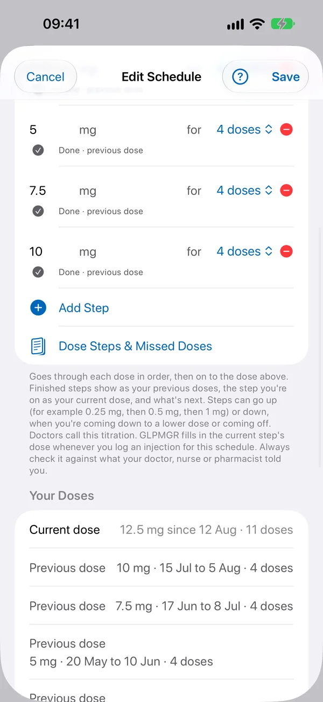
Lembretes
A GLPMGR pode enviar-lhe lembretes de:
- Doses, à hora do lembrete definida no plano (ative Lembrar na hora).
- Reserva baixa, quando a caneta, o frasco ou a receita estiver a acabar.
- Água, ao longo do dia, se quiser (Definições → Água → Lembrar-me de beber). Os lembretes param quando atingir o seu objetivo.
- Pesagem semanal, no dia e à hora que escolher (Definições → Lembretes). Nunca menciona o seu peso.
Em Definições → Lembretes também pode acrescentar um aviso prévio antes de cada dose, um lembrete se a dose não for registada, um check-in de efeitos secundários e um lembrete de proteína ao fim do dia, e ativar Ocultar nomes dos medicamentos. Todos os lembretes de dose têm os botões Registar dose e Adiar.
Os lembretes são configurados no seu dispositivo, por isso nada é enviado de um servidor. Não os está a receber? Confirme que as notificações da GLPMGR estão ativadas em Definições → Notificações no iPhone.
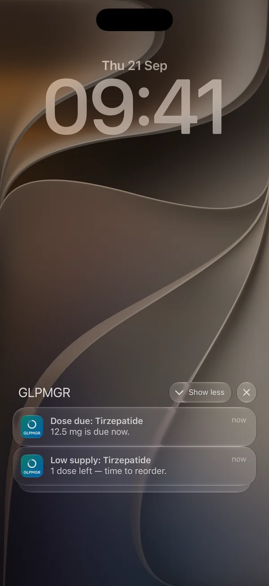
Locais de injeção e o mapa do corpo
A GLPMGR só apresenta as zonas de injeção que o fabricante do seu medicamento indica para a sua região, retiradas do folheto informativo oficial. Confirme ou altere a sua região em Definições → Guia de locais de injeção.
Com Premium, o mapa do corpo mostra essas zonas numa figura simples, sombreadas conforme a frequência com que usou cada uma, para ver o seu próprio histórico num relance. Abra-o a partir do mosaico Local de injeção ou com Ver mapa do corpo ao registar uma dose.
A GLPMGR nunca lhe diz onde injetar a seguir, e isto não é aconselhamento médico. O médico, enfermeiro ou farmacêutico pode mostrar-lhe como e onde injetar. Veja de onde vem cada lista.
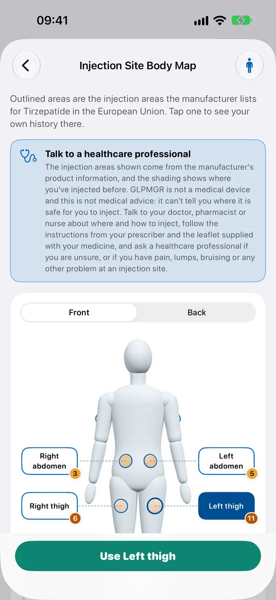
O peso e o seu objetivo
Toque em Registar peso em Hoje ou Percurso. Abre-se um cartão rápido com o último peso: ajuste-o e toque em Guardar, ou em Editar detalhes para acrescentar notas ou mudar a data. Escolha quilogramas, libras ou stones em Definições → Unidades e predefinições.
Se quiser um objetivo, defina-o em Definições → Objetivo de peso. A escolha é sua, e a GLPMGR não sugere nenhum número. Cada corpo reage de forma diferente, e o peso sobe e desce naturalmente de um dia para o outro, por isso a tendência ao longo de semanas diz mais do que qualquer pesagem isolada.
Mantenha premido o mosaico do peso ou do objetivo e escolha Ver tendências para ver o peso ao longo do tempo, com cada dose assinalada. Quando atingir o seu objetivo, o Modo Manutenção pode mostrar a sua média recente ao lado de um intervalo que escolher.
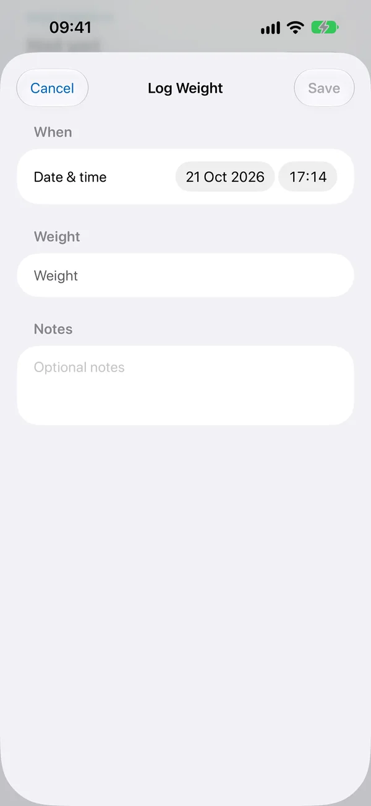
Efeitos secundários e sintomas
Efeitos secundários como náuseas, cansaço ou obstipação são frequentes, sobretudo depois de a dose aumentar. Não são sinal de que esteja a fazer algo errado.
Vá ao separador Sintomas e toque em Registar sintoma. Escolha o que está a sentir, com que força (Intensidade), quando e as notas que quiser. Ative Associar à injeção mais recente se quiser vê-lo junto dessa dose.
Com Premium, Percurso mostra em que dias depois de uma dose os seus sintomas costumam surgir, a partir dos seus próprios registos. É um registo para conversar com o médico ou enfermeiro, não um diagnóstico. Se algum efeito secundário lhe causar preocupação, fale com eles.
Check-in diário. Apetite, energia e sono de 0 a 10, e o trânsito intestinal: responda ao que quiser. Se for mais fácil, escolha Em comparação com a última vez no topo e responda Muito mais baixo, Mais baixo, Igual, Mais alto ou Muito mais alto; a GLPMGR guarda a resposta como um passo a partir da última, para que os gráficos continuem como antes.
Apetite por semana aparece por baixo do peso em Tendências do peso, com as alterações ao tratamento assinaladas.
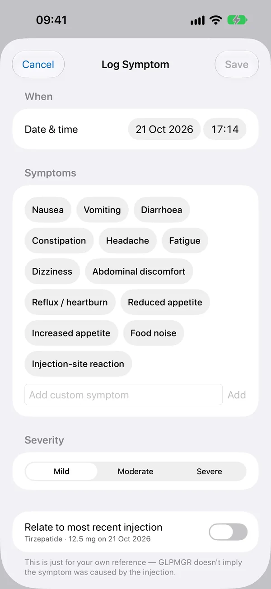
Água e proteína
A Água é gratuita. Ative-a em Definições → Água, defina um objetivo diário e o tamanho do copo, e toque em + Copo no mosaico Água sempre que beber.
A Proteína faz parte do Premium. Ative-a em Definições → Proteína, defina um objetivo diário e uma porção habitual, e toque em + no mosaico Proteína para adicionar uma porção.
Para saber a proteína de um alimento, abra o mosaico Proteína e toque em Pesquisar ou ler um alimento: pesquise entre milhares de alimentos, escolha um recente, leia um código de barras ou toque em Ler um rótulo nutricional. Para um rótulo, tire ou escolha uma foto da tabela nutricional, escolha o valor que se aplica (por porção ou por 100 g), indique quanto comeu, confirme o total e toque em Adicionar. A foto é lida no seu dispositivo e não é guardada.
Favoritos. Em Pesquisar ou ler um alimento, deslize para a esquerda num alimento (ou mantenha-o premido) e toque em Adicionar aos favoritos. Os favoritos aparecem primeiro da próxima vez, e também em primeiro lugar quando pesquisa.
Foto, voz ou texto (iOS 27 com Apple Intelligence): tire uma foto da refeição, diga o que comeu ou escreva-o (por exemplo dois ovos com torrada e um galão). O Apple Intelligence identifica os alimentos no iPhone, a proteína vem das tabelas de alimentos, e confirma a lista antes de qualquer coisa ser adicionada.
Apoio muscular (Definições → Saúde → Apoio muscular, desativado até o ativar): um mosaico de Hoje com a sua média diária de proteína nos últimos 7 dias e as sessões de treino de força desta semana, lidas da Saúde quando são mostradas e nunca guardadas. Pode definir o seu próprio valor diário de proteína para ver os dias em que o atingiu.
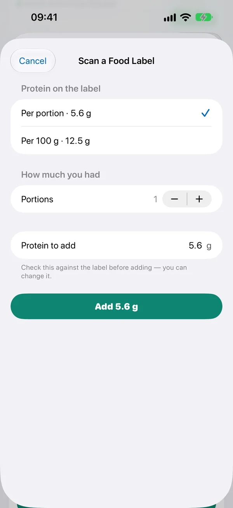
Glicemia
Se mede a glicemia, ative Definições → Glicemia. Pode introduzir as leituras a partir do mosaico Glicemia, ou lê-las da Saúde se o seu medidor ou sensor as guardar lá (ative Ler a glicemia da Saúde em Definições → Saúde).
Escolha mmol/L ou mg/dL em Definições → Unidades e predefinições. Com Premium, tem gráficos de glicemia ao lado das doses. A GLPMGR não classifica nem comenta as suas leituras. Fale com o médico ou enfermeiro sobre o que os seus valores significam no seu caso.
O seu intervalo. Em Definições → Glicemia → O seu intervalo, escreva o intervalo que a sua equipa de saúde lhe indicou, na sua unidade. Aparece como uma simples faixa cinzenta por trás das leituras. A GLPMGR nunca o preenche nem dá cor a uma leitura.
Percurso e tendências
O separador Percurso junta tudo: gráficos do peso e das doses, as suas fotos e medidas, e uma Cronologia pesquisável com todos os registos. Use o intervalo de tempo no topo para recuar semanas ou meses.
Qualquer mosaico com tendências tem uma página Ver tendências, com médias por semana ou por mês. Com Premium, o gráfico Nível estimado do medicamento mostra aproximadamente quanto medicamento poderá estar no seu corpo entre doses. É uma estimativa a partir das doses registadas, não uma análise ao sangue.
Partilhar evolução cria uma imagem com o peso inicial e o atual e as injeções que registou, para partilhar só se quiser.
Nível do medicamento: média de 7 dias. Em Definições → Aspeto, ative Nível do medicamento: média de 7 dias para ver uma linha tracejada com a média da estimativa ao longo de 7 dias, para que a direção geral se veja melhor por entre os picos semanais.
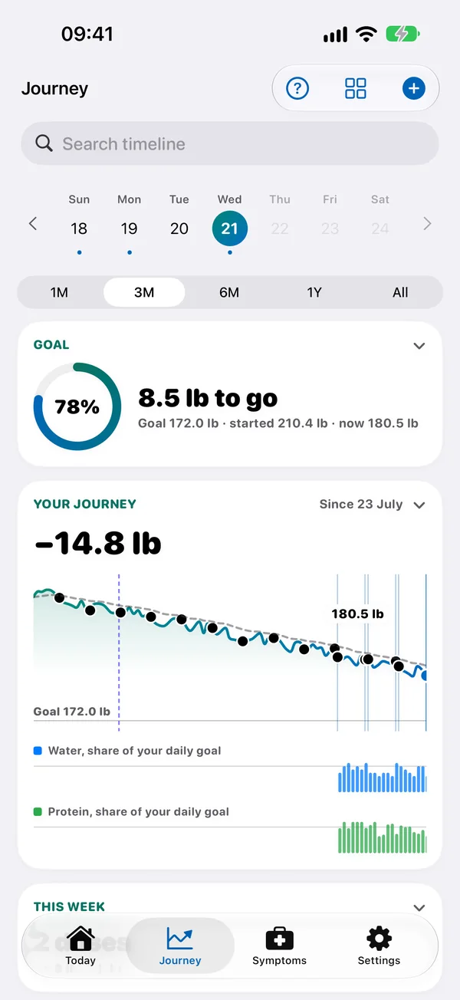
Fotos de evolução e medidas
Com Premium, pode adicionar fotos de evolução e medidas corporais a partir de Percurso (Adicionar foto, Registar medidas).
Tirar uma foto usa a câmara e mostra, em transparência sobre a imagem, a última foto da mesma pose, para que todas fiquem alinhadas; da primeira vez, um contorno ajuda a pôr-se na mesma posição. Escolha Frente, Lado ou Costas para cada foto, e as fotos de evolução podem mostrar uma pose de cada vez.
Para ver o caminho que já fez, toque em Comparar nas suas fotos e escolha duas. Lado a lado e Empilhadas mostram-nas uma junto da outra; Cursor põe-nas no mesmo enquadramento, e basta arrastar para passar da anterior para a mais recente; Transição passa de uma para a outra, com o cursor ou sozinha com Reproduzir. Cada uma mostra a data e o peso registado mais próximo dela, e o botão no canto superior direito abre-a em ecrã inteiro.
Em Comparar, o botão de partilha cria uma imagem de antes e depois no seu dispositivo: as duas fotos lado a lado, com as datas e, se quiser, a variação de peso. Os rostos ficam desfocados, a não ser que desative essa opção. O botão de filme nas fotos de evolução cria um timelapse com todas as fotos de uma pose. Nada sai da GLPMGR até o partilhar ou guardar.
As fotos são privadas: ficam guardadas encriptadas no seu dispositivo e ocultas até as desbloquear com Face ID, Touch ID ou o código. Voltam a bloquear-se quando sai da app, ou de imediato com Bloquear fotos. Pode desativar o bloqueio em Definições → Bloquear fotos de evolução.
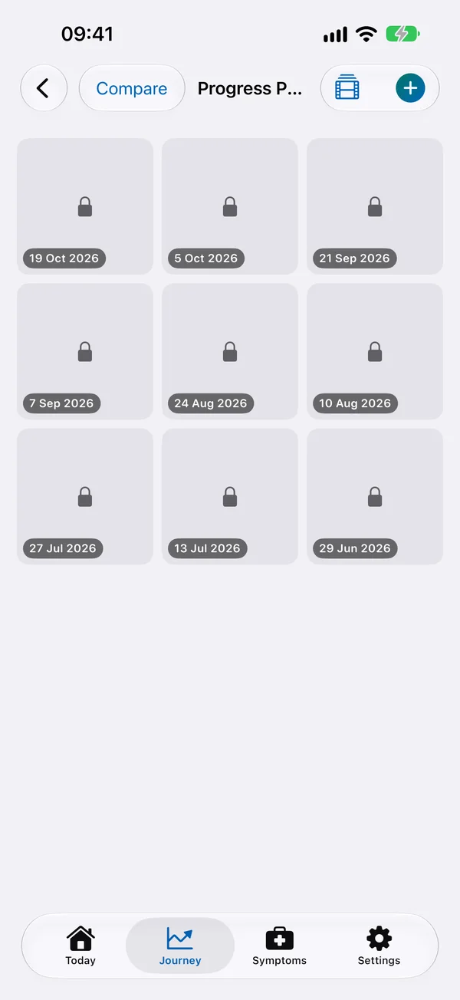
Apple Watch, widgets e o ecrã bloqueado
A app para Apple Watch mostra quanto falta para a próxima dose e a tendência recente do peso, e permite registar o peso ou um copo de água a partir do pulso. Atualiza-se automaticamente a partir do iPhone.
Com Premium, adicione o widget Próxima dose ao ecrã principal ou ao ecrã bloqueado (mantenha premida uma zona vazia, toque em Editar e depois em Adicionar widget), e veja uma contagem decrescente em direto para a próxima dose no ecrã bloqueado.
Widget Evolução, gratuito para todos: a variação de peso desde o início e quanto já percorreu até ao seu objetivo, no ecrã principal ou no ecrã bloqueado.
Próxima dose num canto do mostrador. Com Premium, adicione Próxima dose a um canto de um mostrador como Infográfico ou Modular Compacto (mantenha o mostrador premido, toque em Editar e deslize até aos cantos). Tal como a temperatura no canto, mostra o tempo até à próxima dose em números grandes (dias e horas, como 1d 23h, depois horas, depois minutos, depois AGORA), com um indicador ao longo da margem que se esvazia à medida que a dose se aproxima. Nos mostradores a cores, fica verde até à reta final (o último dia de uma dose semanal), depois âmbar, e vermelho quando está na hora da dose.
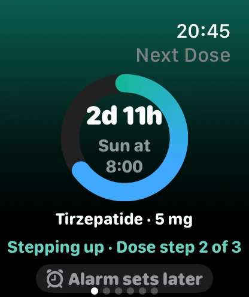
Siri e Atalhos
Com Premium, pode registar e consultar coisas por voz no iPhone, iPad ou Apple Watch. Comece com «Siri» e termine com «na GLPMGR» (ou «na GLP Manager»):
- Registar: «Registar um copo de água na GLPMGR», «Adicionar proteína na GLPMGR», «Registar o meu peso na GLPMGR», «Registar a minha dose na GLPMGR», «Registar um sintoma na GLPMGR» (ou diga qual: «Registar náuseas na GLPMGR») e «Registar a minha glicemia na GLPMGR».
- Perguntar: «Quando é a minha próxima dose na GLPMGR?», «Onde injetei da última vez na GLPMGR?», «Quanta água hoje na GLPMGR?», «Quanta proteína hoje na GLPMGR?», «Como está o meu dia na GLPMGR?» e «Como está o meu peso na GLPMGR?»
A Siri confirma sempre consigo antes de registar uma dose, por isso uma palavra mal ouvida nunca regista nenhuma. Só lhe diz o que registou, nunca dá conselhos. Tudo o que diga respeito à dose, ao peso, aos sintomas ou à glicemia exige o iPhone ou o Watch desbloqueado e, com Ocultar nomes dos medicamentos ativado (Definições → Lembretes), a Siri nunca diz o nome do seu medicamento.
No Apple Watch pode registar água, proteína, o peso ou a dose, e perguntar pela próxima dose, pela água e proteína de hoje ou pelo peso. Os sintomas, a glicemia e o último local de injeção estão no iPhone e no iPad.
Todas as ações estão também na app Atalhos, incluindo Doses restantes, Adiar o lembrete da minha dose, Abrir o meu percurso e Abrir tendências, por isso pode juntá-las a um atalho, ao ecrã principal ou ao botão Ação, ou encontrá-las no Spotlight. Definições → Siri e Atalhos mostra todas as frases.
Cópias de segurança e partilha com o médico
Os seus dados ficam no seu dispositivo e não entram nas cópias de segurança do iCloud nem do computador, por isso vale a pena fazer a sua própria cópia de vez em quando. Vá a Definições → Dados e cópias:
- Fazer cópia de tudo (JSON) guarda uma cópia completa, incluindo fotos e definições, protegida por uma palavra-passe à sua escolha. Guarde bem a palavra-passe: não é possível recuperá-la. Ative Lembrar-me de fazer cópia para receber um lembrete discreto.
- Ativar cópias automáticas guarda essa mesma cópia protegida automaticamente, todos os dias ou todas as semanas, quando abre a GLPMGR e chega a altura. Escolha uma pasta em Ficheiros (No iPhone, iCloud Drive ou uma pen USB, por exemplo) e uma palavra-passe. A GLPMGR mantém as cinco mais recentes e apaga as mais antigas. A palavra-passe fica guardada neste dispositivo para que as cópias se façam sozinhas; vai precisar dela para restaurar noutro dispositivo.
- Restaurar de uma cópia (JSON) recupera tudo, neste dispositivo ou num novo.
- Exportar relatório para o médico (PDF) (Premium) cria um resumo organizado para partilhar ou imprimir para uma consulta.
- Exportar uma folha de cálculo (CSV) exporta os seus registos num ficheiro que abre no Numbers ou no Excel.
Pode escolher para onde vai cada ficheiro, como Ficheiros, AirDrop ou e-mail. Só a cópia de segurança está protegida por palavra-passe, por isso guarde os outros num local privado.
Cópias automáticas. Em Definições → Dados e cópias → Cópias automáticas, a GLPMGR guarda automaticamente uma cópia protegida por palavra-passe, todos os dias ou todas as semanas, numa pasta que escolher em Ficheiros (iCloud Drive, No iPhone, uma pen USB), e mantém as cinco mais recentes. A palavra-passe fica no porta-chaves deste dispositivo. Para restaurar uma, use Importar.
Sincronização iPhone e iPad. Em Definições → Sincronização iPhone e iPad, toque em Mostrar um código neste iPhone num dispositivo e em Ler ou escrever um código no outro. A partir daí, sempre que a GLPMGR estiver aberta nos dois, na mesma rede Wi-Fi ou perto um do outro, ficam com as mesmas doses, pesos, fotos e tudo o resto, nos dois sentidos, e de novo após cada alteração. Comunicam diretamente entre si: nada vai para o iCloud, para a GLPMGR nem para a iSafeNet, e só os seus dispositivos emparelhados conseguem ler os dados. Definições como lembretes, unidades e objetivos são próprias de cada dispositivo. Desemparelhar termina a sincronização; os registos que já estão num dispositivo ficam lá.
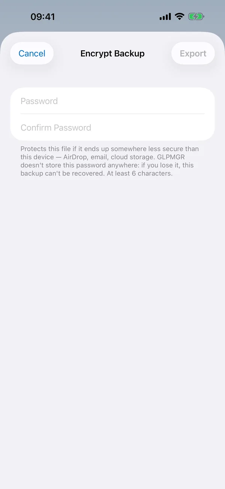
Saúde
A ligação à app Saúde está desativada até a ativar em Definições → Saúde. Pode guardar os seus pesos na Saúde e mostrar dados de nutrição (como proteína e água de uma app de registo alimentar) em Hoje. A glicemia também pode ser lida da Saúde, com um interruptor próprio na mesma página quando a glicemia está ativada (consulte Glicemia).
O iPhone pede autorização da primeira vez. Para a alterar mais tarde, abra a app Saúde, toque na sua fotografia e depois em Apps e GLPMGR.
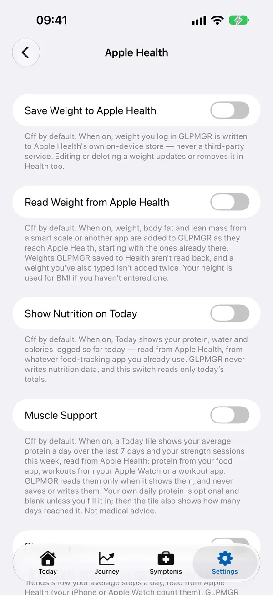
Obter ajuda
Há palavras novas para si? A página Palavras explicadas explica-as em linguagem simples (também na app, em Definições → Palavras explicadas). As nossas perguntas e respostas e a página de suporte tratam do resto, ou envie um e-mail para info@isafenet.app. Lemos todas as mensagens.
A GLPMGR é uma ferramenta pessoal de registo, não um dispositivo médico, e não dá aconselhamento médico. Para tudo o que diga respeito ao seu tratamento, o médico, enfermeiro ou farmacêutico é a melhor pessoa a quem perguntar.